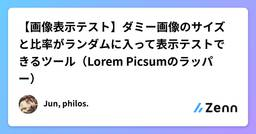
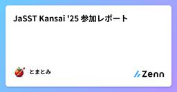
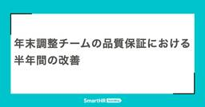
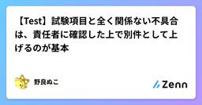
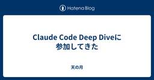
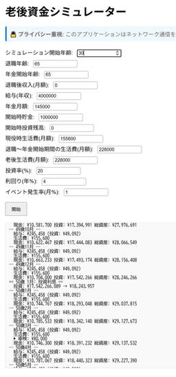
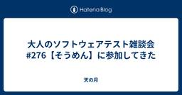
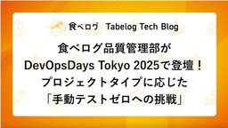
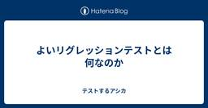
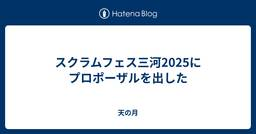

直近1週間の更新
7/5 (土)

スクラムフェス金沢2025のスタッフ打ち合わせ(最終回)に参加してきた  天の月
天の月
今日はスクラムフェス金沢2025の最終回(ふりかえり)をしてきたので、会の様子と感想を書いていこうと思います。 情報保障 議事録 タスク整理の仕方 会場とオンライン スポンサーチケット 次回開催時期 情報保障 スクラムフェス仙台では情報保障に関しては業者に頼んでおり、その業者の方が専任で修正をするようにしているという話がありました。それなりにお金がかかるということもあるのですが、スクラムフェス金沢の最終収支を見ると赤字にはならない範囲だったということで、来年やるならそのような手立てをすることも大切なんじゃないか？という意見が出ていました。 議事録 Discordでやっているとどうしても議事録を…
2時間前

【画像表示テスト】ダミー画像のサイズと比率がランダムに入って表示テストできるツール（Lorem Picsumのラッパー）  Zennの「Test」のフィード
Zennの「Test」のフィード
課題（とくにWordPressなどのCMSで）画像の表示テストが面倒くさいので、サイズや比率がランダムにimgタグに入るようにしたい。 公開リポジトリhttps://github.com/junphilos/shuffle_dummy_images/ 概要ランダム画像を返してくれる「Lorem Picsum」ツールのラッパーツール【コア機能】サイズと比率をランダムに指定して、すべてのimgに後入れする【サブ機能】テキストと日付もランダムに入るようにしている※ README.mdに詳しく書いてあります。
5時間前
第5回：ユーザーと作るアプリ 〜アジャイル開発のススメ〜 VBA 一人情シス Zennの「Test」のフィード
Excel VBAで業務効率爆上げ！一人情シスが語る「真の使えるアプリ」の作り方 第5回：ユーザーと作るアプリ 〜アジャイル開発のススメ〜 1. 徹底したヒアリング: ユーザーの真の課題を掴むVBAでの業務アプリ開発において、最も重要だと気づいたこと。それは、ユーザーを開発プロセスの初期から巻き込むことです。前回の記事で「動けばOK」の罠について触れましたが、これは往々にして開発者側の思い込みや独りよがりな設計から生まれます。「こんなアプリがあれば、きっと喜んでくれるだろう」という思い込みは、しばしば危険な結果を招きます。ユーザーが本当に困っていること、日々の業務で非効率...
10時間前
7/4 (金)

JaSST Kansai '25 参加レポート Zennの「Test」のフィード
最近急にあつくなってきました。私が住んでいる部屋の近くに 市営のプール があるのですが、近くの高校生が毎日泳いでいるようです。監督の怒鳴り声を聞きながら仕事をしています。ああ恐ろしや当日は 4:30 起きです。早すぎ この記事についてJaSST というテスト専門のシンポジウムに参加してきました！https://jasst.jp/kansai/25-about/そちらのイベントの内容について報告します。これをきっかけに次の開催に行ってみたいなテストについて興味が出たといったような影響を与えられれば幸いです JaSST とはJaSST（ジャスト）は、NPO法...
1日前
Image.networkとCachedNetworkImageの違いとtest時のポイント 1 Zennの「Test」のフィード
1 Zennの「Test」のフィード
!この記事は、生成AIを使用して記載しています。誤字脱字、誤情報などありましたら連絡頂けると助かります🙇 概要Flutter開発において、ネットワーク画像の表示は頻繁に使用される機能です。しかし、本番環境ではCachedNetworkImageを使用したいがテスト環境では問題が発生することがあります。今回は、これらの違いと、テスト時に発生する課題とその解決方法について解説します。 技術スタックFlutter 3.19.5+cached_network_image 3.3.1flutter_test（標準テストフレームワーク）golden_toolkit 0.15...
1日前
VRTのススメ - Flutter Golden Testによる視覚的回帰テストの実践 Zennの「Test」のフィード
!この記事は、生成AIを使用して記載しています。誤字脱字、誤情報などありましたら連絡頂けると助かります🙇 概要Flutter開発において、UIの変更による意図しない視覚的バグを防ぐことは重要な課題です。今回は、Flutter Golden Testを活用したVRT（Visual Regression Testing）の実装について、実際のプロジェクトでの適用例を交えて解説します。 導入背景今回VRTを導入したプロジェクトは、すでに数年間本番環境で稼働しているFlutterアプリケーションです。コードベースの書き方や構成は少し古めの部分もあり、最新のベストプラクティスとは...
1日前

年末調整チームの品質保証における半年間の改善  QA - SmartHR Tech Blog
QA - SmartHR Tech Blog
年末調整チームの品質保証における半年間の改善 こんにちは。年末調整チームでプロダクトエンジニアをやっているkashiwara0205です。 私はチームの中で品質保証についてオーナーシップを持っています。 年末調整チームには専任のQAエンジニアがいないため、チーム内で品質保証に関わる業務の推進役を担当しています。 2024年11月頃から2025年7月の現在に至るまで、様々な施策にチーム全体で取り組んできました。 この半年間で取り組んだ内容や効果について時系列で紹介します。 不具合分析の実施（2024年 11月 ~ 2025年 1月） まず、現状を知るためにQAエンジニア主催で不具合分析を実施しま…
1日前

【Test】試験項目と全く関係ない不具合は、責任者に確認した上で別件として上げるのが基本 Zennの「Test」のフィード
はじめに試験項目と無関係なバグ報告が現場に及ぼす影響と対策。 対象チケット駆動型の開発体制で、開発と試験の混線に悩んでいる方向け。 失敗事例これはTwitterでも常々言及していますが。事例をあげるときは、複数の現場で目撃した事象を出しています。アンチパターンも、アンチパターンを形成する土壌も、ある程度パターン化されているように見えます。 失敗事例：別件で不具合報告チケットの内容は画像素材の差し替えのみでした。開発者視点で不具合が起きるとすれば、差し替え対象の画像を取り違えるか、既存のキャッシュ設定の不備くらいでしょうか。開発環境はもちろん検証環境にデプ...
2日前
テスト前の「ぽちぽち会」が開発チームを活性化させた話 〜失敗から生まれた最高の習慣〜 Zennの「QA」のフィード
はじめにこんにちは！グロービスで学習管理システムのQAをやっているカロリーナです。みなさん、受け入れテストが始まってから「あ、これ実装漏れてる...」「この機能、どうやって使うんだっけ？」なんて経験はありませんか？私たちのチームでは、そんな失敗から生まれた「ぽちぽち会」という習慣が、想像以上の効果をもたらしました。今回は、5回の実践を通じて見えてきた「ぽちぽち会」の効果と、簡単に始められる実践方法をご紹介します。 そもそも「ぽちぽち会」って？「ぽちぽち会」は、一般的にはドッグフーディング、お触り会、バグバッシュなどと呼ばれる活動の、私たちのチーム版の呼び名です。開発中...
2日前
テスト前の「ぽちぽち会」が開発チームを活性化させた話 〜失敗から生まれた最高の習慣〜 Zennの「Test」のフィード
はじめにこんにちは！グロービスで学習管理システムのQAをやっているカロリーナです。みなさん、受け入れテストが始まってから「あ、これ実装漏れてる...」「この機能、どうやって使うんだっけ？」なんて経験はありませんか？私たちのチームでは、そんな失敗から生まれた「ぽちぽち会」という習慣が、想像以上の効果をもたらしました。今回は、5回の実践を通じて見えてきた「ぽちぽち会」の効果と、簡単に始められる実践方法をご紹介します。 そもそも「ぽちぽち会」って？「ぽちぽち会」は、一般的にはドッグフーディング、お触り会、バグバッシュなどと呼ばれる活動の、私たちのチーム版の呼び名です。開発中...
2日前

Claude Code Deep Diveに参加してきた 天の月
https://cartaholdings.connpass.com/event/360380/ こちらのイベントに参加してきたので、会の様子と感想を書いていこうと思います。 会の概要 会の様子 hiragramさんの発表 パネルディスカッション Claude Codeの使い方 Claude Codeの限界 「良いコード」の指示 会全体を通した感想 会の概要 第一線でAI Coding Agentを使い込むエンジニアたちがClaude CodeにDeep Diveするイベントです。 会の様子 hiragramさんの発表 最初に.~/.claude/projectsの構造に関する話があり、シンプ…
2日前
7/3 (木)
アジャイルカフェ@オンライン 第75回に参加してきた 天の月
https://agile-studio.connpass.com/event/358698/ こちらのイベントに参加してきたので、会の様子と感想を書いていこうと思います。 会の概要 会の様子 1on1やワークショップを実施 用語のずれ アジャイルへの認識を揃えないほうがいいのでは？ タイムライン 組織でアジャイルの認識を揃える方法 会全体を通した感想 会の概要 アジャイルコーチのお三方がアジャイル実践者から寄せられる悩みに答えていくイベントです。今日のテーマは「組織やチーム内で「アジャイル」への認識を揃えるための方法」でした。 会の様子 1on1やワークショップを実施 1on1やワークショッ…
2日前

外国人採用の現実とは？企業のメリット、課題、対応策  PTW／ポールトゥウィン【公式】
PTW／ポールトゥウィン【公式】
ポールトゥウィンのBPO（Business Process Outsourcing）事業を通じて蓄積してきた専門知識や業界ノウハウをもとに、担当者が業界の課題や動向、今後の展望をわかりやすく解説する「Knowledge Hub by PTW」。第二回では、前回に引き続き外国人採用支援サービス「Stepjob（ステップジョブ）事業の事業部長・行平澄子が登場します。そもそも、外国人採用は企業にとってどんなメリットがあるのか。さらに、実際に採用する際に現場で直面する具体的な課題や、その対応策についても詳しくご紹介します。続きをみる
2日前
【QA Career Talk After Talk】QAエンジニアの生存戦略 -AI時代におけるスキルセットを考える 2 Zennの「QA」のフィード
はじめにこんにちは、令和トラベルの miisan です。先日開催された「QA Career Talk vol.5 〜QAエンジニアの生存戦略～」イベントにご参加くださった皆さん、ありがとうございました！また、イベント中はたくさんの質問、Xでの感想などありがとうございました！https://reiwatravel.connpass.com/event/355308/久しぶりの「QA Career Talk」かつ初のハイブリッド開催ということで、楽しく有意義な時間を私も過ごすことができました。イベントはたった1時間という限られた時間でしたので、全ての参加者の気になるポイントにお...
3日前
逆fukabori․fm: iwashi氏が向き合うエンジニアのマネジメントという難問達  SHIFT EVOLVE グループの新着イベント
SHIFT EVOLVE グループの新着イベント
開催日時: 2025/08/20 19:30 ～ 20:50<br />開催場所: オンライン<br /><br /><h2>逆fukabori․fm: iwashi氏が向き合うエンジニアのマネジメントという難問達</h2><p>エンジニアに人気のポッドキャスト「<a href="https://fukabori.fm/" rel="nofollow">fukabori.fm</a>」のホスト・iwashi氏。『エレガントパズル エンジニアのマネジメントという難問にあなたはどう立ち向かうのか』や『エンジニアリングが好きな私たちのためのエンジニアリングマネジャー入門』の翻訳者としても広く知られるiwashi氏をゲストに迎え、エンジニアリングマネージャーとしての日常をfukabori（深掘り）します。</p><p>ポッドキャストではゲストのお話を深掘りするiwashi氏を逆fukaboriするのは、SHIFTのエンジニアリングマネージャー・森川。SHIFT EVOLVEで...
3日前
7/2 (水)

老後資金&FIREシミュレーターを作った【ご自由に改造してお使いください】  テスターちゃん【4コマ漫画】
テスターちゃん【4コマ漫画】
こんにちは。テスターちゃん作者です！ 最近マンガを描いていない……わけではなく、テスターちゃん外伝的なものを月一で連載しています。こちらはまた別のブログでかきますね！ 老後資金&FIREシミュレーターを作った【ご自由に改造してお使いください】 体調不良で寝ていたのですが、その際にFIRE含め退職後の老後にどれくらいのお金が必要なのか突然気になりました。 そこで、ChatGPTでDeep Researchを行い、その結果を使ってWEBアプリ「老後資金&FIREシミュレーター」を作ってみました。 ブラウザだけで完結し、特にデータ通信することもありません。 ご自由に遊んでみてください！ jam082…
3日前
まちがい探しの答え解説(開発生産性Conference2025) AIテスト自動化プラットフォーム「MagicPod」公式note
「まちがい探し」に挑戦！２つの画面を見比べて違う場所を探してください！—--MagicPodのスポンサーブースでは、WebサイトUI間違い探しを実施しています。パッとわかるものから、うっかり見逃しそうなものまで間違いは全部で10個！あなたの画面観察力が試される!?—--続きをみる
3日前
Goのアンチパターン集 Zennの「Test」のフィード
Go言語で開発を続けていると、便利な言語機能ゆえについ陥ってしまう非推奨なコーディングパターン＝アンチパターンが存在します。本記事では、広範なカテゴリーにわたるアンチパターンとその改善策を、具体的なコード例とともに解説します。各アンチパターンについて、その状況と文脈、問題点（保守性・性能・正当性への悪影響）、そして推奨されるベストプラクティスや改善例を示します。 コーディングスタイルにおけるアンチパターンまずは基本的なコーディングスタイル上のアンチパターンです。これらはコードの可読性や意図の明確さを損ね、場合によってはバグの温床にもなりかねません。 Blank識別子（_）の不必...
4日前
Cursor × MagicPod MCPサーバーで、AIレビューの仕組みづくりに挑戦してみた話 Zennの「QA」のフィード
株式会社Hacobu（以下、Hacobu)でQAエンジニアをやっています、かわせです。MagicPod MCPサーバーの活用事例としてAIにテストケースをレビューさせる仕組みづくりをしたお話しを今回紹介できればと思います。 はじめにMagicPodのようなノーコード自動テストツールは、運用が進むほどテストケースの均一化と質をどう担保するかという壁にぶつかります。この点については、導入時にガイドライン・命名規約などのルールを設け、それを運用することで回避できると考えていました。テスト自動化のレールを敷く -MagicPod運用設計の舞台裏しかしガイドラインや規約になじみのないテ...
4日前

大人のソフトウェアテスト雑談会 #276【そうめん】に参加してきた 天の月
大人のソフトウェアテスト雑談会 #276【そうめん】 - connpass 今週もテストの街葛飾に行ってきたので、会の様子と感想を書いていこうと思います。 コーチングの練習 研修 WACATE スクラムフェス三河のプロポーザル 開発生産性カンファレンス 全体を通した感想 コーチングの練習 パーソナルコーチングを最近勉強しているという参加者が、コーチングの種明かしをしながら(今の質問はこういう意図やこういうテクニックがあったみたいなことを話しながら)コーチングするという話がありました。 研修 コーチングに限らず研修は受けられるものは受けたいとは考えているものの、なかなかお金がかかってくるという側…
4日前
7/1 (火)
QA合宿"WACATE"に参加してきたよ！レポート yuden
6/28-29の2日間、新習志野にて開催されたWACATEに初参加しました。 WACATE2025 夏 〜動かすだけじゃだめですか？〜 開催概要 - WACATE主催 WACATE実行委員会 日時 2025年6月28日（土）10:00 （受付開始 09:30） ～ 2025年6月29wacate.jp 続きをみる
4日前

私が2日目の最後にフィードバックしたかったこと  ブログ - WACATE
ブログ - WACATE
WACATE 2025 夏に参加いただいた皆さん、お疲れさまでした！ 各班の発表後にお話ししたフィードバックですが、時間が足りずに伝えきれなかった部分がたくさんありました。そこで改めて、皆さんにお伝えしたかったことをまと続きを読む投稿 私が2日目の最後にフィードバックしたかったこと は WACATE に最初に表示されました。
4日前
スクラム祭りの打ち合わせ(43回目)をしてきた 天の月
aki-m.hatenadiary.com こちらの打ち合わせをしてきたので、会の様子と感想を書いていこうと思います。 スポンサーメール返信 キャッシュ・フロー表の更新 リファインメント ホームページにロゴ掲載 スポンサーメール返信 スポンサーメールに返信しました。 ちょっとどう対応したらいいのかがわからず苦心していたので、一旦は素直に対応中である旨を伝えたうえで、素直に対応が分かりそうな人に対してお願いをすることにしました。 スポンサーの方に対しては、申し訳ないですがもう少々お待ちいただきたいという旨をメールで返信することにました。 キャッシュ・フロー表の更新 キャッシュ・フロー表を更新しま…
4日前

食べログ品質管理部がDevOpsDays Tokyo 2025で登壇！プロジェクトタイプに応じた「手動テストゼロへの挑戦」 27 QA - Tabelog Tech Blog
QA - Tabelog Tech Blog
はじめに こんにちは。食べログシステム本部の品質管理部に所属しているSoftware Engineer in Test (SET)のhagevvashiと百瀬です。 この度、2025年4月に開催されたDevOpsDays Tokyo 2025において、「手動テストゼロへの挑戦」というテーマで登壇しました。本記事では、その登壇内容について詳しくご紹介します。 本記事は、発表に興味があったものの参加できなかった方や、テキストで読みたい方向けに作成しています。 実際の講演の資料については、以下のスライドも合わせてご確認いただければ幸いです。 「手動テストゼロへの挑戦」とは何か まず最初に重要な点をお…
4日前
ProService Talent Book vol.6「技術進化と市場変化の狭間で、これからのQAに求められる力とは」 Autify
Autify ProServiceで働くプロフェッショナルにスポットライトを当てる「ProService Talent Book」。第六弾は、技術進化と市場変化の狭間で、常に「本質的な課題解決」にこだわり続けるQA Consultantの逆井 賢さんにインタビューしました。テストに魅了されたキャリアの原点から、第三者検証の転換期をどう捉えてきたのか、そしてこれからのQAに求められる力とは何か。深い洞察と実体験を交えながら語っていただきました。続きをみる
5日前
ふりむけばグローバル化 yoya
先日、"英語環境で働いているエンジニアのリアル" というテーマでトークセッションをする機会をいただきました。企画された方、参加された皆様、楽しい時間をありがとうございました。対談相手の方が「自ら望んでグローバル企業に入社した」タイプ、そして自分が「在籍していた企業がグローバル化してしまった」タイプなのでその対比がうまく出せるといいなと思っていたのですが、時間も限られていたのであまり深掘りできなかった……というのがちょっと心残りです。続きをみる
5日前
6/30 (月)

よいリグレッションテストとは何なのか 1 テストするアシカ
リグレッションテストとは ソフトウェアに対して変更を加えたとき、変更を加えていない箇所で期待通りのふるまいとならない事象をリグレッションと呼びます。 リグレッションテストは、このリグレッションを検知し、リスクレベルを低減するためのアプローチの一つです。 なお、リグレッションに対するリスクへの対処方法は、リグレッションテストだけではありません。 より実践的なアプローチは、goyokiさんのブログ「リグレッションテストの方針立て」の記事をご覧ください。 リグレッションテストの価値 リグレッションテストは、リグレッションが発生した場合のリスクを低減することを目的としたテストであるため、リグレッション…
5日前

スクラムフェス三河2025にプロポーザルを出した 天の月
タイトルの通り、スクラムフェス三河2025にプロポーザルを出したので、今日はその告知です。 プロポーザル概要 プロポーザルを出した理由 個人的に楽しみなポイント プロポーザル概要 Scrum Fest Mikawa 2025 - 製造業のプロダクト開発で見つけた『本当にほしいモノ』を作る醍醐味〜製造業というラベル付けを超えて〜 | ConfEngine - Conference Platform これまで様々な業種・業態でプロダクト開発をしてきましたが、2024年半ばからは複数の製造業のプロダクトに携わる機会が出てきました。とはいえ、プロダクト開発の概要を聞かされたときは、アジャイル開発とは程…
5日前
WACATE2025夏：景品の本の紹介 ブログ - WACATE
今回のWACATE2025夏でも3賞の景品と抽選で本をプレゼントさせていただきました。 この本は、以下のような理由で選んだ本です。 ・招待講演者の方に選んでいただいた本 ・WACATE2025夏のセッションを作るにあたり続きを読む投稿 WACATE2025夏：景品の本の紹介 は WACATE に最初に表示されました。
5日前
WACATE2025夏：無事終了。ご参加ありがとうございました！ ブログ - WACATE
2025年6月28日(土), 29日(日）にトーセイホテル＆セミナー幕張（新習志野駅近く）にて、 59名参加いただきWACATE2025夏を開催し無事終了しました。 参加者の皆様、ご講演いただいた吉澤 智美様、応援いただ続きを読む投稿 WACATE2025夏：無事終了。ご参加ありがとうございました！ は WACATE に最初に表示されました。
5日前
JSTQBの行動規範について自分なりに考えてみる 1 Go!Go!Gomaznさんのフィード
はじめにJSTQBおよびISTQBには、「行動規範」というものがあります。これらの行動規範は、テストエンジニアとしての普段の業務に対して常に意識すべきものであるものだと考えています。というわけで、JSTQBの行動規範について考えてみました。この文章を通じて、他のテストエンジニアの方々にとっても、より良いプロしての道を歩むための一助となることを心から願っています。これをきっかけに、自分自身でも「テストエンジニアとしてどのような行動が正しいのだろうか」と考えるきっかけとなれば幸いです。 行動規範ISTQBではソフトウェアテストに関与する人間として、8つの行動規範を示してい...
5日前
JSTQBの行動規範について自分なりに考えてみる 1 Zennの「Test」のフィード
はじめにJSTQBおよびISTQBには、「行動規範」というものがあります。これらの行動規範は、テストエンジニアとしての普段の業務に対して常に意識すべきものであるものだと考えています。というわけで、JSTQBの行動規範について考えてみました。この文章を通じて、他のテストエンジニアの方々にとっても、より良いプロしての道を歩むための一助となることを心から願っています。これをきっかけに、自分自身でも「テストエンジニアとしてどのような行動が正しいのだろうか」と考えるきっかけとなれば幸いです。 行動規範ISTQBではソフトウェアテストに関与する人間として、8つの行動規範を示してい...
5日前
プロセスが腐敗していないか、匂いに敏感になろう Zennの「QA」のフィード
こんにちは、SODAでクオリティエンジニアをしているokauchiです。ソフトウェア開発において「プロセスの腐敗臭」に気づけるかどうかは、品質の維持・向上に直結する重要な視点です。ここで言う「匂い」とは「なんだかうまくいっていない気がする」「この手順、昔は意味があったけど今は形骸化しているのでは？」という違和感のこと。今回は、プロセスの変化に対して敏感であることの大切さを考えてみたいと思います。 昔は有効だったプロセスが、今もそうとは限らないある課題に対して導入したプロセスが非常に効果を発揮し、定着していくということがあります。たとえば「毎朝の定例ミーティング」や「チェックリスト...
5日前
QA主催！エンジニアとともに品質文化を育てるテスト勉強会の舞台裏 2 Zennの「QA」のフィード
こんにちは！atama plusでQAエンジニアをしています、池上です。「エンジニアを巻き込んで品質について考えたいが、どう働きかければ良いかわからない」そんな悩みを抱えるQAエンジニアの方もいらっしゃるのではないでしょうか。この記事では、エンジニアを巻き込んで開催した「テスト勉強会」について、企画の背景から参加者のリアルな声までご紹介します。開発チーム全体で品質向上を目指したい方のヒントになれば幸いです。 1. なぜ「テスト勉強会」を開催したのか？QAチームが大切にしていること本題に入る前にatama plusのQAチームが大切にしていることを紹介させてください。...
6日前
QA主催！エンジニアとともに品質文化を育てるテスト勉強会の舞台裏 2 Zennの「Test」のフィード
こんにちは！atama plusでQAエンジニアをしています、池上です。「エンジニアを巻き込んで品質について考えたいが、どう働きかければ良いかわからない」そんな悩みを抱えるQAエンジニアの方もいらっしゃるのではないでしょうか。この記事では、エンジニアを巻き込んで開催した「テスト勉強会」について、企画の背景から参加者のリアルな声までご紹介します。開発チーム全体で品質向上を目指したい方のヒントになれば幸いです。 1. なぜ「テスト勉強会」を開催したのか？QAチームが大切にしていること本題に入る前にatama plusのQAチームが大切にしていることを紹介させてください。...
6日前
6/29 (日)

2025年6月のふりかえり 天の月
2025年も半年が終わったので、ふりかえりをしていこうと思います。 仕事 社外活動 プライベート 仕事 他の領域と比べてバランスが崩れ気味だという話をちょこちょこ書いていたのですが、今月は完全に崩れていてほぼ仕事という感じでした。 急転直下の展開といいますか、自分でも本当にまったく予想していない展開になって、その展開自体はすごくチャレンジングだし楽しみもあるものだったのですが、大分重たい仕事でもあって数日間は本当に仕事が自分に務まるのか非常に不安になりました。(割とポジティブにものを考えるのは得意だしリフレーミングみたいなのも割とできるタイプなので、人生で仕事をしていて始めてそのような感情にな…
6日前

受け入れテスト観点の備忘録 Zennの「Test」のフィード
バックエンドエンジニアのための受け入れテスト観点集 はじめに私も含め普段の業務でUI設計や実装に携わる機会の少ないバックエンドエンジニアにとって、受け入れテストで何を確認すべきかは悩ましい問題です。そこでテストの重要な観点を体系的に整理しました。 受け入れテストの位置付け 受け入れテストの目的システムがユーザーの要求を満たしているかの最終確認本番環境での実際の使用場面を想定したテスト開発チーム内のテストでは見落としがちな観点の検証 単項目テスト 余白と配置のバランスUIの品質を左右する重要な要素として、まず余白と配置の統一性を確認します。余白関連の...
6日前

pytest 用リソースがテストコードと一緒に置いてあると邪魔じゃないですか？ Zennの「Test」のフィード
テスト用リソースがテストコードと一緒に置いてあると邪魔じゃないですか？テスト用リソースを使用するテストはそれほど多くありませんテストコード内にテスト用リソースを配置すると、エクスプローラーのツリー表示領域がテスト用リソースで埋め尽くされてしまいます:tests/└── some_test_package/ ├── some_test_module_a/ (テスト用リソース) ├── some_test_module_b/ (テスト用リソース) ├── some_test_module_c.txt (テスト用リソース) ...
6日前
AI駆動開発を支えるテスト重視の戦略を考える Zennの「Test」のフィード
AIと人間が効率的に協働するための「テスト重視の戦略」について、一般論と自身の経験に基づいて有効な戦略をまとめました。それらを実践するためのサンプルプロジェクトも作成しました。なお、本記事は主にRDBを含む Webバックエンド を前提としています。説明の都合上、具体例はGo言語で示しますが、アーキテクチャやテスト戦略の考え方は他の言語でも応用可能です。 🟦 AIコード生成の現実と課題 🟠 規模による制約ある程度大きなソフトウェアになると、全てをAIに任せることは現実的ではありません。参考記事： ソフトウェア規模とAIに任せられる範囲 🟠 AIが生成するコードの特性...
7日前